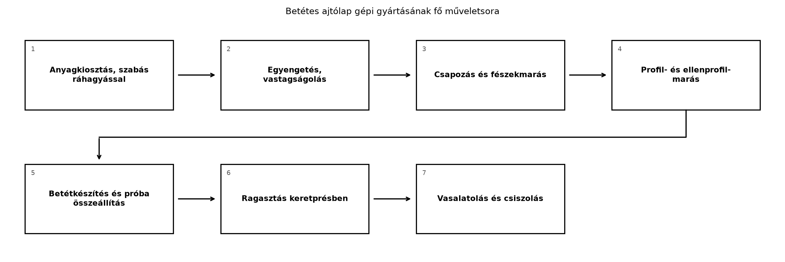

A megrendelő új, tömörfa keretes betétes ajtólapot kér a belső szobákra, meglévő tokba vagy teljesen új tokba. A rajz elkészült a Ajtólapok: vázkeretes, üreges és tömör; belső és bejárati ajtók alfejezetben tanultak alapján, és a műhelyben most az a kérdés: milyen sorrendben, milyen gépekkel, milyen ellenőrzésekkel gyártjuk le úgy, hogy az ajtólap ne vetemedjen, a betét ne csörögjön, a csapok zárjanak, és a pántok pontosan illeszkedjenek? Ha a gépi műveletsort rosszul állítjuk össze, a végeredmény nem ajtó, hanem görbe, feszülő alkatrészhalmaz lesz.
Képzelj el egy belső ajtólapot az asztalosműhelyben. A szerkezet öt fő elemből áll: két függőleges keretléc, két vízszintes keretléc és egy betét. A függőleges elemek hosszabbak, ezek adják a teljes magasságot. A vízszintes elemek közéjük csapozódnak. A keret belső élébe nútot martunk, ebbe ül a betét. A keret belső élén profil és nút fut; a vízszintes lécek végén ennek ellenprofilja (negatívja) van. A betét nem ragasztott körbe, hanem úszik a nútban, körben 2–3 mm mozgási hézaggal. Ez a szerkezet géppel gyártva akkor lesz jó, ha az alkatrészek derékszögűek, azonos vastagságúak, a fészek és a csap pontosan illeszkedik, és a keretet présben, átlók ellenőrzése mellett ragasztjuk.

Az ábra a keret–csap–fészek–nút–úszó betét kapcsolatot egyben mutatja. A robbantott nézeten a két függőleges keretléc (2000 × 100 × 42 mm) fészkeket és belső élén nútot kap; a két vízszintes keretléc csappal együtt 720 mm hosszú (600 mm + 2 × 60 mm csap); középen a 620 × 1820 × 22 mm-es betét ül. Az A–A metszeten a 24 × 12 mm-es nútban a betét és a nút alja között 2 mm úszóhézag marad, a keret belső élén profil fut. A részlet a 60 mm-es csapot, a fészket és a vízszintes léc végére mart ellenprofilt mutatja.
Definíció. A betétes ajtólap olyan keretszerkezetű ajtólap, amelyben a külső keret négy keretlécből készül, a belső mezőt pedig egy külön betét tölti ki. A betét lehet tömörfa, furnérozott lap, rétegelt lemez vagy üveg. A betét a keret belső nútjában úszik, azaz nem ragasztjuk körbe, ezért a fa nedvességmozgása nem feszíti szét a keretet.
Szabály. A rajz–anyag–művelet hármas itt is kötelező: az ajtó rajzáról készíts szabásjegyzéket, a szabásjegyzékből pedig gépi műveletsort. Minden alkatrészhez írd oda a gép nevét, a beállítást, az ellenőrzési pontot és a biztonsági előírást.
Szabály. A keretelemeket mindig a bázislap–bázisél elve szerint munkáljuk meg. Először az egyik lapot és élt derékszögbe munkáljuk az egyengető gyaluval, majd ezek a bázisok vezetik a vastagsági gyalut, a csapozó gépet és a marógépet.
Szabály. A betét hőmozgási hézagát a betét anyaga határozza meg. Tömörfa betétnél oldalanként 3–4 mm, rétegelt lemez vagy furnérozott MDF betétnél 2–3 mm szükséges (tájékoztató érték, ellenőrizendő az adott anyag és klíma szerint). A betétet nem szabad körben beragasztani.
A következő számozott recept a fő műveletsort adja meg. A részletes gépi biztonsági lépéseket a Technológiai lap részben ismertetem.
Fűrészáru átvétele és nedvességellenőrzés. A belső ajtóhoz felhasznált fűrészáru nedvességtartalma 10 ± 2 % legyen (tájékoztató, ellenőrizendő a gyártó és a termékszabvány szerint). A túl nedves anyag zsugorodása megfeszíti a keretet, a túl száraz anyag bedagadáskor repesztheti a kötést. Villamos nedvességmérővel több ponton mérj.
Anyagkiosztás és szabás. A keretléceket ráhagyással szabjuk a formatizáló körfűrészen. A kész keretléc keresztmetszetéhez (szélesség és vastagság) 6–8 mm, hosszhoz 20–30 mm ráhagyást adjunk, mert az egyengető és vastagsági gyalu elveszi a felső réteget. A betétet is ráhagyással szabjuk, például hosszban és szélességben 10–15 mm-rel nagyobbra.
Egyengetés. Az egyengető gyalun először az egyik lapot, majd az egyik élt egyengesük derékszögbe. Ez lesz a bázislap és a bázisél. A szerszámot és a késtartót mindig a védőburkolattal használjuk. A munkadarab végét tolóblokkal (tolófával) vezetjük; a gépkönyvben megadott legkisebb hossznál rövidebb darabot az egyengető gyalun nem munkálunk meg – azt hosszabb darabként gyaluljuk, és csak utána vágjuk méretre (ellenőrizendő: gépkönyv, MSZ EN ISO 19085 vonatkozó része).
Vastagságolás. A vastagsági gyalun a bázislap ellentétes oldalát párhuzamosra vesszük a kívánt vastagságig. A keretlécek végső vastagsága legyen azonos, általában 40–44 mm. A vastagsági gyalu csak a bázislapra merőleges vastagságot tudja adni, ezért az egyengetés nem hagyható ki.
Szélességre vágás. A bázisélt vezetve a keretléceket a körfűrészen kész szélességre szabjuk. A keretlécek szélessége a rajz szerint 90–120 mm között szokott lenni belső ajtóknál. Az alsó keretléc közel párhuzamos legyen a felsővel, a derékszögű végeket a csapozás adja meg.
A keretcsapok és fészkek megmunkálása. A vízszintes keretlécek végére a Csapozó marógépek, láncmarógép és szerkezeti kötések gépen készíti a csapot, míg a függőleges keretlécekbe a láncmarógép vagy a hosszlyukfúró a fészket. A csapváll legyen derékszögű, a csap hossza 1–2 mm-rel rövidebb a fészek mélységénél. Ha nem csap-fészkes, hanem idegencsapos kötést használunk, akkor minden elembe hosszlyukat marunk, és a lamellót vagy köldökcsapot illesztjük be.
Profil- és ellenprofil-marás. A keret belső élén alsómarón alakítjuk ki a profilt és a betét nútját. A profil a keret belső, látható éle, a nút a betétet fogadó horony. Az ellenprofil a vízszintes keretlécek végére mart, a profil negatívját adó alak, amely a függőleges keretléc profiljára illeszkedik. Profil–ellenprofil szerszámpárral (vagy átállítható kombinált szerszámmal) készül; a beállítást próbadarabok összeillesztésével ellenőrizzük (ellenőrizendő: szerszámgyártói adatlap). A marófej fordulatszáma, előtoló sebessége és a szerszám megengedett fordulatszáma legyen összhangban a gépkönyvvel.
A betét elkészítése. A furnérlemez vagy tömörfa betétet méretre szabjuk, éleit lecsiszoljuk. Tömörfa betétnél a szélesség eléréséhez szükség lehet szélesítő toldásra. A betét vastagsága 20–24 mm, a nút szélessége ennél 1–2 mm-rel nagyobb legyen, hogy a betét ne szoruljon. A betétet addig próbáljuk, amíg a nútban kis kézzel tolva mozgatható, de nem lötyög.
Próba összeállítás. Ragasztó nélkül illesztjük össze a keretet, behelyezzük a betétet, és ellenőrizzük a derékszöget, a síkfekvést, a csapvállak zárását és a betét hőmozgási hézagát. Ha minden illeszkedik, bontsuk vissza, és előkészítjük a ragasztást.
Ragasztás keretprésben. A csapokat és fészkeket ragasztóval vékonyan, egyenletesen kenjük be. A betétet ne ragasszuk. A keretet keretprésben szorítjuk össze. A préselési nyomás és idő a ragasztó gyártói adatlapja szerint alakul; faipari D3/D4 ragasztónál gyakran 0,7–1,2 N/mm² nyomás és 15–60 perc présidő szükséges (tájékoztató, ellenőrizendő). A préselés alatt mérjük a két átlót, állítsuk derékszögbe.
Vasalathelyek marása. A pántok, a zár, a kilincs és a tokzár helyét sablonnal, felsőmaróval és fúróval munkáljuk meg. A pánt vastagságát teljes mélységben süllyesztjük, a zár előlapja egy síkban legyen az ajtó élfelületével. A vasalatok gyártói adatai alapján állítjuk a marómélységet.
Csiszolás és felületkezelés előkészítése. A ragasztó kinyomódott feleslegét eltávolítjuk, a felületet 120–150, majd 180-as szemcsemérettel csiszoljuk. A fapor ellen elszívást és légzésvédőt használj. Éles éleket élmentesítjük, a kitört szálakat, kisebb lyukakat tapasszal pótoljuk, ha a felületkezelő rendszer megengedi.
Adott. Egy belső betétes ajtólap rajza szerint a
kész ajtólap magassága l = 2000 mm, szélessége
b = 800 mm. A keretlécek szélessége
b_k = 100 mm, vastagsága v_k = 42 mm. A betét
22 mm vastag rétegelt lemez. A betétnút mélysége
t_n = 12 mm, a betét oldalhézaga h = 2 mm
mindkét oldalon.
Keresett. A betét kész mérete: l_betét
és b_betét.
Megoldás lépései.
A betét mező belső méretei:
A betét a nútba mindkét oldalon 12 mm-rel nyúlik be, a hézagot azonban levonjuk:
A betét kész mérete tehát 620 × 1820 mm, a keret nútja pedig 12 mm mély. A betét hossza a nútban 2–2 mm mozgási hézagot kap. ∎
Anyagszükségleti ellenőrzés. A kerethez négy keretléc szükséges:
| Tétel | Megnevezés | Db | Anyag | Kész méret l × b × v (mm) | Nyers méret l × b × v (mm) | Megjegyzés |
|---|---|---|---|---|---|---|
| 1 | Bal keretléc | 1 | fenyő tömörfa | 2000 × 100 × 42 | 2030 × 108 × 50 | ráhagyás gyaluláshoz |
| 2 | Jobb keretléc | 1 | fenyő tömörfa | 2000 × 100 × 42 | 2030 × 108 × 50 | ráhagyás gyaluláshoz |
| 3 | Felső keretléc | 1 | fenyő tömörfa | 720 × 100 × 42 (600 + 2 × 60 mm csap) | 745 × 108 × 50 | csap 60 mm, ellenőrizendő a fészekmélységgel |
| 4 | Alsó keretléc | 1 | fenyő tömörfa | 720 × 100 × 42 (600 + 2 × 60 mm csap) | 745 × 108 × 50 | csap 60 mm, ellenőrizendő a fészekmélységgel |
| 5 | Betét | 1 | rétegelt lemez | 620 × 1820 × 22 | 640 × 1840 × 22 | ráhagyás szabáshoz |
A keretlécek kész térfogata:
Ez a ráhagyás nélküli, kész méretekből számított mennyiség. A szükséges ráhagyási anyagot és a hibakiejtést a Szabásjegyzék és anyagnorma módszerével kell hozzátenni. A mintaárakat a feladatok között számoljuk ki; a pontos egységárakat az aktuális beszerzéshez kell rögzíteni.
A tok készítésekor hasonlóan járunk el: a tokcsíkok szélességét a falvastagság és a szükséges falcméret határozza meg. Ha a tok belső szélessége az ajtólap szélessége plusz oldalanként 2–3 mm hézag, a tokot úgy választjuk meg, hogy az ajtólap pántolás után egyenletesen zárjon. A tok sarokkötése 45°-os gépi illesztéssel vagy csapos sarokkötéssel készülhet; a falcot alsómarón készítjük.
Cím. Betétes belső ajtólap és tok gépi
gyártása
Termék/alkatrész. Keretes ajtólap 800 × 2000 mm, betét
620 × 1820 mm, tok a helyszíni felmérés szerint.
Anyag. Lucfenyő keretléc, rétegelt lemez betét, D3 vagy
D4 faipari ragasztó.
Gépek és szerszámok. Formatizáló körfűrészgép,
egyengető gyalu, vastagsági gyalu, csapozó és láncmaró gép, alsómaró,
felsőmaró, hosszlyukfúró, keretprés, szalagcsiszoló.
Gépbiztonság. A művelet betanított, felügyelt tanulónak szól; védőberendezés nélkül, egyedül, fáradtan ne végezd. Minden gépen ellenőrizd a szerszám rögzítését, a megengedett fordulatszámot, a védőburkolatot, a hasítóéket, a tolófát és az elszívást. Porképző munkánál használj elszívást és légzésvédőt: keményfa-por esetén legalább FFP2, ajánlott FFP3 (ellenőrizendő: hatályos rákkeltőanyag-rendelet és határérték). Forgó szerszámnál tilos kesztyűt viselni. A munkadarabot mindig tolófával, befogóval vagy előtolóval vezesd, kézzel soha ne nyúlj a szerszám közelébe.
Indítás előtti ellenőrzés.
- Védőberendezések zárva, hasítóék és tolófa a helyén.
- Szerszám éles, repedésmentes, a megengedett fordulatszám nagyobb, mint
a gép fordulatszáma.
- Elszívás bekapcsolva, munkaterület szabad, vészleállító
elérhető.
- A munkadarabon nincs szeg, csavar, laza göcs vagy repedés.
- Szerszámcsere, beállítás és takarítás előtt a gép áramtalanítva, a
szerszám teljesen megállt.
Számozott lépések ellenőrzési pontokkal
Fűrészáru átvétel és nedvességmérés. Mérj villamos nedvességmérővel 10 ± 2 % tartományt. Ellenőrzés: több ponton, a keresztmetszetben is mérj; a szélső értéket jelöld fel.
Szabás ráhagyással. A formatizáló körfűrészen szabj a keretlécekből 4 darabot ráhagyással. Ellenőrzés: a szabás hossza a kész méret plusz 20–30 mm, a keresztmetszet +6–8 mm.
Egyengetés. Az egyengető gyaluval bázislapot és bázisélt készíts. Ellenőrzés: derékszögelővel 0,3 mm hézag alatt, tájékoztató érték.
Vastagságolás. Vedd a keretléceket 42 mm vastagra. Ellenőrzés: tolómérővel minden elem azonos vastagságú legyen.
Szélességre szabás. A bázisélt vezetve vágd 100 mm szélesre. Ellenőrzés: a lécek párhuzamosak, a szélesség 100 ± 0,3 mm.
Csapozás és fészekmarás. A vízszintes elemekre csapozz, a függőlegesekbe marj fészket. Ellenőrzés: a csapvállak szorosak, a csap hossza 1–2 mm-rel rövidebb a fészek mélységénél.
Profil- és nútmarás. Alsómarón munkáld a belső profilt és a nútot. Ellenőrzés: a betét próbadarabja könnyedén, de nem lötyögve illeszkedik a nútba.
Betét szabása és illesztése. A rétegelt lemezt szabd 640 × 1840 mm-re, majd próbáld be. Ellenőrzés: a betét kész mérete 620 × 1820 mm, a nútban 2–3 mm mozgási hézag.
Próba összeállítás. Ragasztó nélkül állítsd össze az ajtólapot. Ellenőrzés: a keret átlói egyenlőek, a csapvállak zárnak, a betét nem feszül.
Ragasztás keretprésben. Vigyél fel ragasztót a csapokra és a fészkekbe, a betétet ne ragaszd. Préseld a keretet a gyártói idő alatt. Ellenőrzés: préselés közben mérd az átlókat, a derékszög 0,5 mm/1000 mm-en belül, tájékoztató.
Vasalathelyek marása. A pánt, zár és kilincs helyét sablonnal, felsőmaróval készítsd el. Ellenőrzés: a pántlap a kerettel egy síkban legyen, a zár előlapja az élben üljön.
Csiszolás, felületkezelés előkészítése. Csiszold 120–150, majd 180-as szemcseméretig. Ellenőrzés: nincs szálkás, fényes csík, a felület pormentes.
Dokumentálás. A munkanaplóba jegyezd fel a felhasznált anyag adatait, a gépbeállításokat, a mért nedvességet, az átlók hosszát és a vasalatok típusát. Ha eltérést tapasztalsz, jelöld a rajzon és a gyártási naplón.
Az ajtólap minőségét minden gyártási fázis után és a kész terméken is ellenőrizni kell.
A betét csörög, később megszorul, vagy a keret megvetemedik. Oka: a betétet körben beragasztották, vagy a nút hézag nélkül készült. A fa a nedvességváltozás miatt dolgozik; ha a betét nem tud úszni, feszültség keletkezik. Helyes gyakorlat: a betét méretét a hézaggal számoljuk, ragasztást csak a középső ponton alkalmazzon az, aki rögzíteni akarja a betét elfordulás ellen.
Az ajtólap egyik sarka süllyed, az ajtó lelóg. Oka: a pántok zsanérhézagai nem egy vonalba esnek, a pántcsavarok meglazultak, vagy a tok nem függőleges. Helyes gyakorlat: pántolás előtt a tokot vízmértékkel, függővel állítsuk, a pánthelyeket sablonnal, azonos távolságra marjuk.
A csapváll nem zár, a keret nem derékszögű. Oka: a csap hosszabb a fészek mélységénél, a fészek nem elég mély, vagy a keretprésben nem ellenőriztük az átlókat. Helyes gyakorlat: a csapot 1–2 mm-rel rövidebbre készítjük, és préselés közben átlókat mérünk.
A profil és az ellenprofil nem illeszkedik. Oka: a maróbeállítás magassága vagy mélysége eltér, a profil és az ellenprofil szerszámpárját nem azonos beállítással használtuk. Helyes gyakorlat: próbadarabon állítsuk be a szerszámot, és minden elemet ugyanazon a bázislapon vezessünk.
A keretlécek eltérő vastagságúak. Oka: a vastagsági gyalulás előtt az egyengetést kihagyták, így a bázislap nem volt sík. Helyes gyakorlat: mindig készítsünk bázislapot az egyengetőn, mielőtt a vastagsági gyalu következik.
Egy asztalos műhelyben egy belső betétes ajtót készítettek, és a kész ajtó a téli fűtési szezonban halk koppanó hangot adott, majd a keret belső élénél hajszálrepedések jelentek meg. A vállalkozó az ajtólapot megvizsgálta: a betétet körben PVAc ragasztóval rögzítették a nútban, hézag nélkül. A fűtés miatt a betét és a keret kiszáradt, a ragasztott betét nem tudott zsugorodni, így feszültség keletkezett. A betét elengedett, és a keret belső élén repedés indult meg.
Hibaelemzés. A tünet a hideg időben jelentkező reccsenő hang és a keret belső repedése volt. A vizsgálat szerint a betét mérete a számítottnál nagyobb, a nút széles és mély, de a betétet ragasztották. A javítás során az ajtólapot szétbontották, a ragasztómaradványt lecsiszolták, a betét méretét 2 mm-rel csökkentették, és a betétet csak középen rögzítették egy vékony, rugalmas tömítőanyagba ágyazott csappal. A megelőzés: minden betétet úszóra kell készíteni, és a rajzon fel kell tüntetni a hézagméretet.
1. feladat (A). Sorold fel a betétes ajtólap öt fő szerkezeti elemét, és nevezd meg a betétet tartó hornyot!
2. feladat (A). Egy ajtólap mérete 700 × 1900 mm. A keretléc szélessége 90 mm, a nút mélysége 11 mm, a betét oldalhézaga 2 mm. Számítsd ki a betét kész méretét!
3. feladat (B). Az alábbi szabásjegyzékben a keretlécek nyers mérete hiányzik. Töltsd ki a táblázat hiányzó nyers méreteit úgy, hogy a kész keretléc 100 × 42 mm, a ráhagyás a keresztmetszetben 6–8 mm, hosszban pedig 20–30 mm legyen!
| Tétel | Megnevezés | Db | Kész méret (mm) | Nyers méret (mm) |
|---|---|---|---|---|
| 1 | Bal keretléc | 1 | 2000 × 100 × 42 | … |
| 2 | Felső keretléc | 1 | 720 × 100 × 42 | … |
4. feladat (B). Egy tanuló ezt a sorrendet írta: szabás → vastagságolás → egyengetés → profilmarás → csapozás → próba összeállítás. Mi a hiba ebben a sorrendben? Írd fel a helyes sorrendet!
5. feladat (C). Miért kell rétegelt lemez betétnél kisebb hőmozgási hézag, mint tömörfa betétnél? Mi történik, ha a betétet mégis körben ragasztjuk?
6. feladat (C). Egy kész ajtólap a tokban a pánt felőli oldalon fent 3 mm, alul 8 mm hézagot mutat. Mi lehet a hiba, és hogyan javítható?
7. feladat (D). Készíts rövid művelettervet egy 600 × 1800 mm-es betétes ajtólap gyártására. Minden lépéshez írj legalább egy ellenőrzési pontot és a használt gépet!
8. feladat (D). A kidolgozott példa szerint a keret
fűrészáru kész térfogata 0,0228 m³. A fenyő fűrészáru minta
egységára 145 000 Ft/m³, a kiválasztási és megmunkálási
ráhagyás 18 % anyagveszteséget okoz. Számítsd ki a kerethez szükséges
tényleges anyagmennyiséget és annak költségét!
Önellenőrzés – válaszok
600 + 2·12 - 2·2 = 620 mm, magasság
1800 + 24 - 4 = 1820 mm.1. feladat (A)
A betétes ajtólap öt fő eleme: két függőleges keretléc, két vízszintes keretléc és egy betét. A betétet tartó horony a nút.
2. feladat (A)
Belső méret:
Betét mérete:
A betét kész mérete 538 × 1738 mm.
3. feladat (B)
A gyalulási ráhagyás miatt a keresztmetszeti nyers méret legyen 108 × 50 mm (+8 mm), hosszban pedig 20–30 mm-rel több a kész méretnél.
| Tétel | Megnevezés | Db | Kész méret (mm) | Nyers méret (mm) |
|---|---|---|---|---|
| 1 | Bal keretléc | 1 | 2000 × 100 × 42 | 2025 × 108 × 50 |
| 2 | Felső keretléc | 1 | 720 × 100 × 42 | 745 × 108 × 50 |
A pontos nyers méret a fűrészáru minőségétől és a gépbeállítástól függ, ezért a műhelyben a tényleges darabok szerint kell rögzíteni.
4. feladat (B)
A hibás sorrendben az egyengetés a vastagságolás után szerepel, és a profilmarás megelőzi a csapozást. A helyes sorrend:
5. feladat (C)
A rétegelt lemez méretváltozása a nedvesség hatására kisebb, mert a furnérrétegek keresztirányban stabilizálják a lemezt. A tömörfa betét viszont húr- és sugárirányban jelentősen dagadhat, ezért nagyobb hézag kell. Ha a betétet körben ragasztjuk, az nem tud úszni, így a fa mozgása feszültséget okoz; a betét megrepedhet, vagy a keret belső élén repedés keletkezhet.
6. feladat (C)
Az ajtólap a pánt felőli oldalon alul nagyobb hézagot mutat. Ennek oka gyakran az, hogy a pántcsavarok lazultak meg, a pántok közepe nem egy függőleges vonalban van, vagy a tok nem függőleges. Javítás: a tokot vízmértékkel állítsuk be, a pántokat húzzuk után, ellenőrizzük a pántorsó függőleges vonalát. Ha a pántcsavarok szükség szerint nem fognak, vastagabb vagy hosszabb csavart, esetleg tipikkel bélelt csavarfészket alkalmazzunk.
7. feladat (D)
Egy lehetséges műveletterv:
8. feladat (D)
A tényleges anyagmennyiség:
Költség:
Ez mintaár, a feladat a számítás menetét mutatja; a tényleges árat a beszerzési árajánlat alapján kell rögzíteni.
Az ajtógyártás gépi technológiája a rajz–anyag–művelet hármasra épül. A betétes ajtólap keretét négy keretléc alkotja; a vízszintes elemekre csapot, a függőlegesekbe fészket marunk. A csapozó és láncmaró gép a kézi vésett csapozás elvét követi, de pontosan és gyorsan dolgozik. A keret belső élébe az alsómaró nútját és profilját marjuk, a betétet 2–4 mm hőmozgási hézaggal úszóra készítjük, ezért nem szabad körben ragasztani. A keretet présben, átlóellenőrzéssel ragasztjuk. A vasalatokat és a tokot az ajtólaphoz kell illeszteni; a minőségellenőrzés az átlókat, a síkfekvést, a hézagokat és a vasalathelyeket vizsgálja. Továbbvitt eredmény. Az ajtógyártás itt bemutatott műveleti sorrendjét, szabásjegyzékét és ellenőrzési szempontjait használjuk a Épületasztalos-ipari és kültéri termékek helyszíni beépítése és a vizsgaremek dokumentációjának készítésekor.